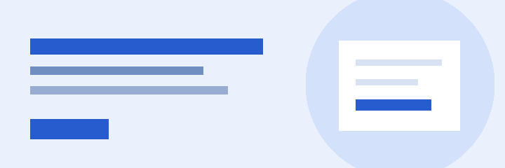

资源与环境
统一申请开发、测试和演示环境。
16 种生成区块的完整预览；基础按钮、字段与弹窗可通过本地检索按需获取。
| 研发环境资源申请 | REQ-1024 | 陈晨 | 10-20 09:10 | 待审批 |
| 季度项目预算调整 | REQ-1025 | 林晓 | 10-21 09:11 | 待审批 |
| 数据访问权限开通 | REQ-1026 | 周亦 | 10-22 09:12 | 已通过 |
| 设备采购申请 | REQ-1027 | 王宁 | 10-23 09:13 | 处理中 |
| 新成员入组申请 | REQ-1028 | 李然 | 10-24 09:14 | 已通过 |
| 设计资源归档申请 | REQ-1029 | 张若 | 10-20 09:15 | 待审批 |
| 测试环境扩容申请 | REQ-1030 | 刘航 | 10-21 09:16 | 处理中 |
| 办公设备调拨 | REQ-1031 | 赵清 | 10-22 09:17 | 已退回 |
| 跨部门协作邀请 | REQ-1032 | 沈安 | 10-23 09:18 | 已通过 |
| 知识库发布审核 | REQ-1033 | 许言 | 10-24 09:19 | 待审批 |
陈晨提交了资源申请
研发环境资源 · 等待你的审批产品设计评审已完成
体验改版项目 · 已归档评审结论周亦完成数据权限配置
数据平台 · 已通知相关成员季度工作计划已更新
团队空间 · 新增 3 项里程碑统一申请开发、测试和演示环境。
沉淀项目经验，快速找到协作信息。
提交问题，跟踪处理进展与结果。
整理用户反馈与需求优先级
林晓 · 10-28确认申请流程中的异常状态
周亦 · 10-29完成工作台界面设计
陈晨 · 10-27构建基础组件与视觉规范
李然 · 10-28对齐本季度产品目标
王宁 · 10-24在事项列表中查看状态与处理记录。本原型展示示例流程，不连接真实审批服务。
提交前可直接修改；真实业务中的撤回和重新提交规则需业务方确认。
本周有 3 项工作即将到期，请优先关注关键节点并与负责人确认。
当前事项没有关联文件，可以先完成基础信息。

本地交互原型 · 示例数据 · 表单和任务状态不会发送或保存至服务器